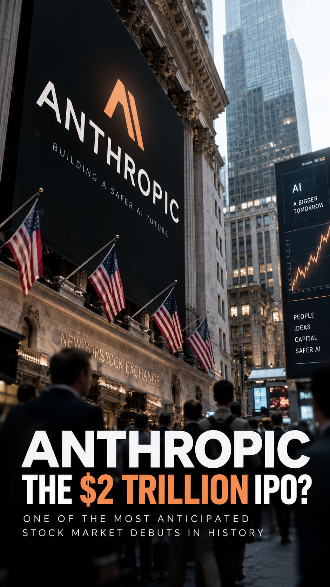
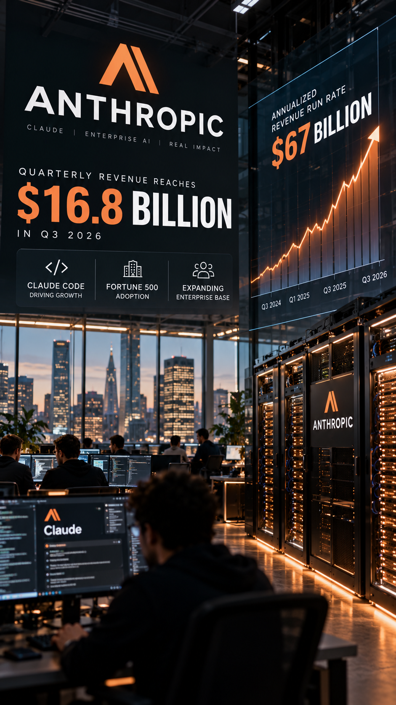
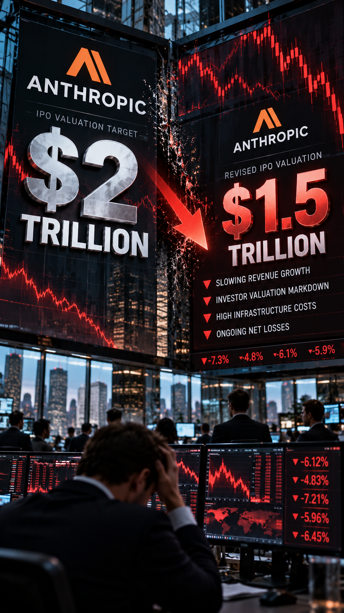

Video Studio
Anthropic IPO · 25-second cinematic preview
00:00 / 00:25
Scene 1 — The $2 Trillion IPO
Four scenes with gentle Ken Burns motion and 0.8-second crossfades. This is a silent preview; narration and MP4 rendering will be added later.